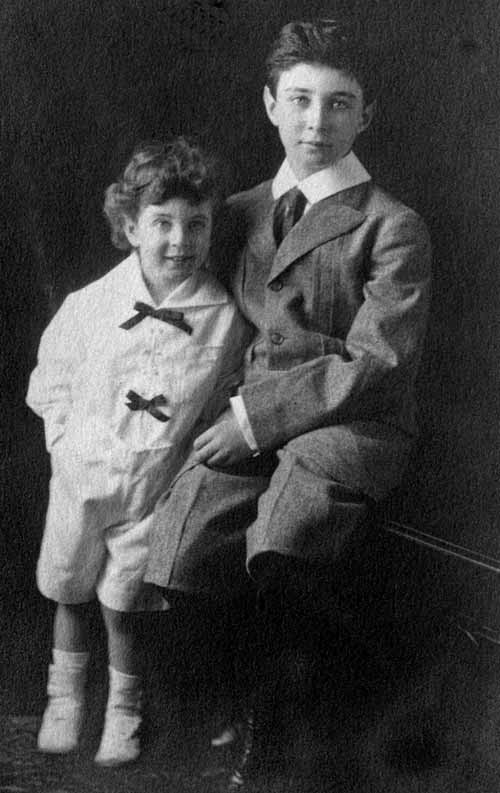
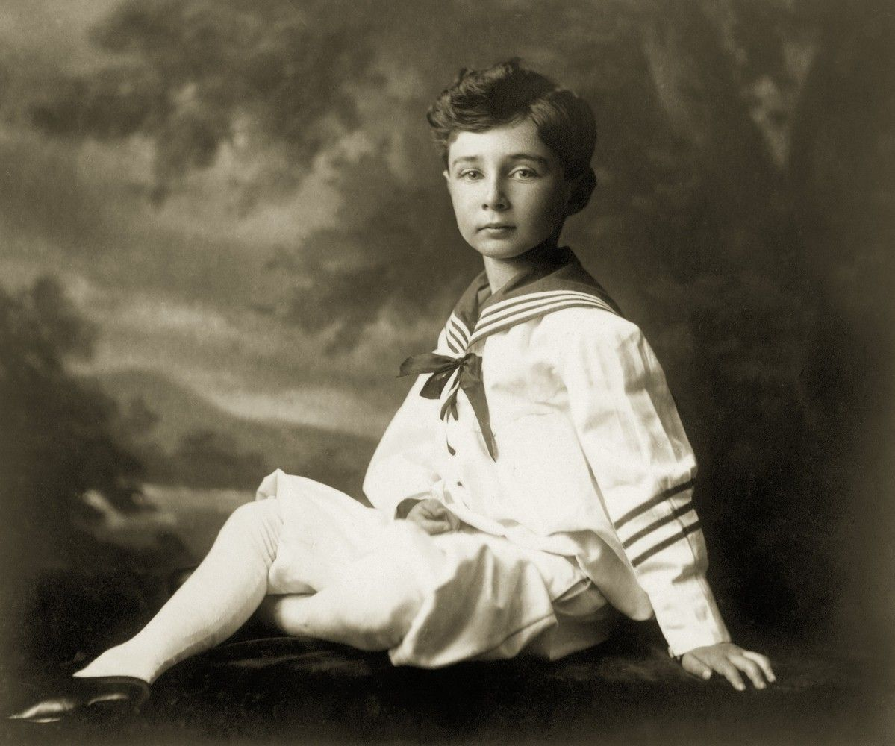
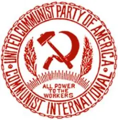
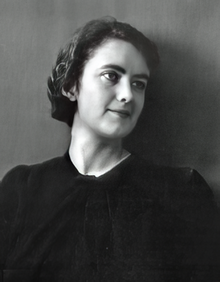
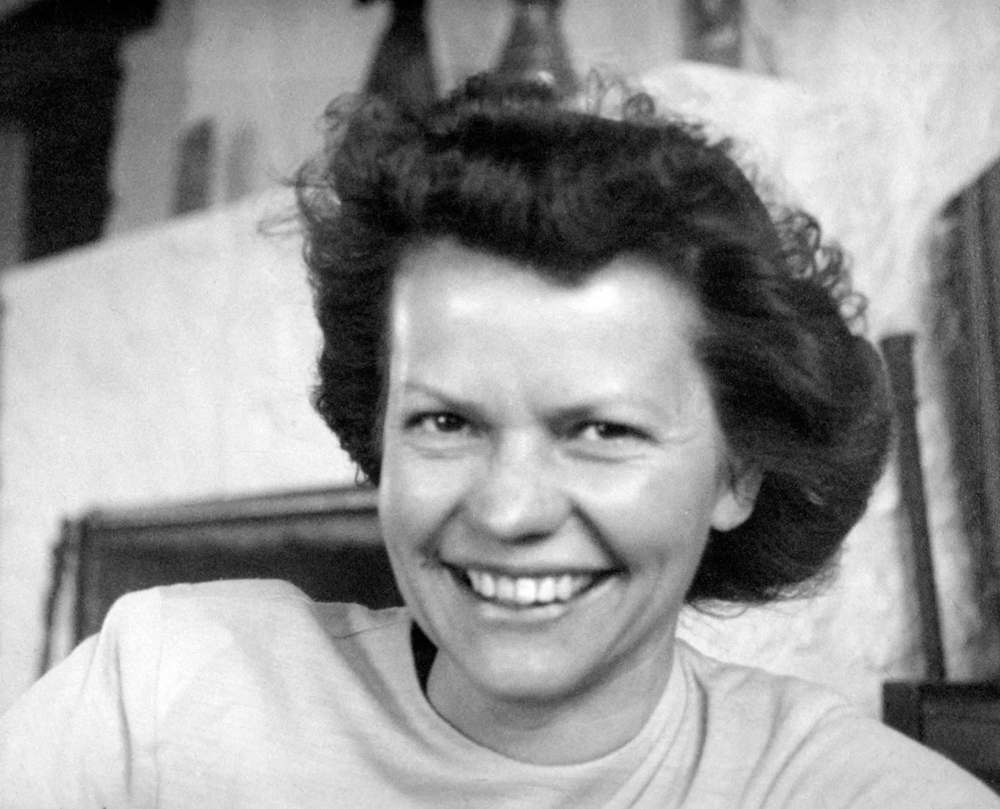
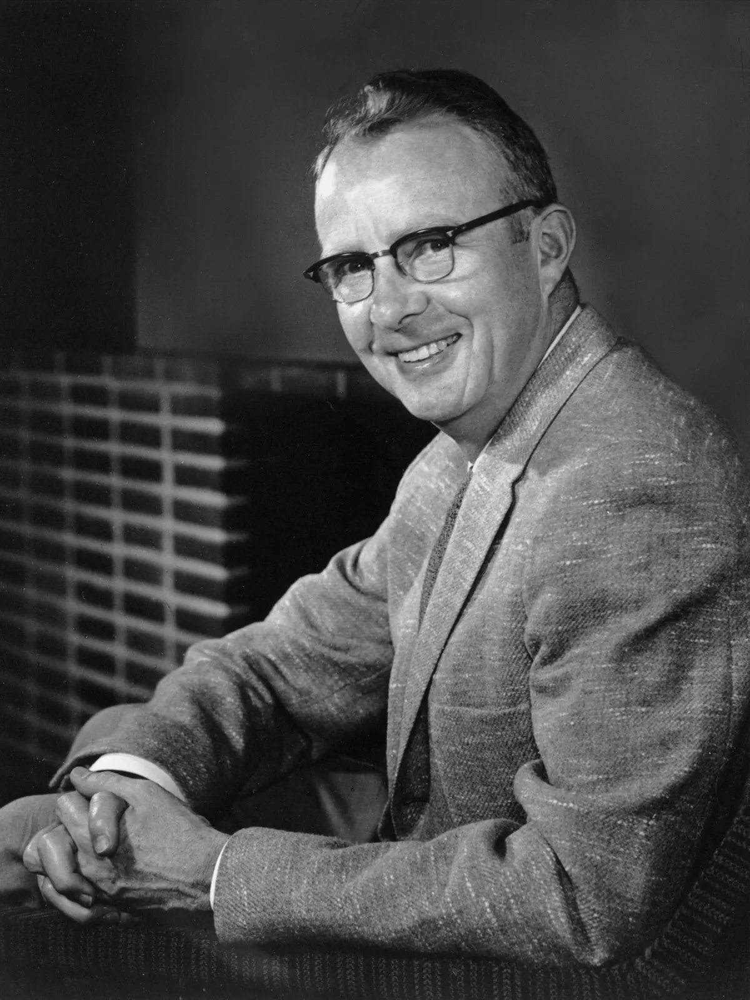

Personal Life
Early Life
- Oppenheimer was born Julius Robert Oppenheimer into a non-observant Jewish family in New York City on April 22, 1904, to Ella (née Friedman), a painter, and Julius Seligmann Oppenheimer, a successful textile importer. Robert had a younger brother, Frank, who also became a physicist. Their father was born in Hanau, then part of the Hesse-Nassau province of the Kingdom of Prussia, and came to the United States as a teenager in 1888 with few resources and no money, baccalaureate studies, or knowledge of the English language. He was hired by a textile company and within a decade was an executive there, eventually becoming wealthy. In 1912, the family moved to an apartment on Riverside Drive near West 88th Street, Manhattan, an area known for luxurious mansions and townhouses. Their art collection included works by Pablo Picasso, Édouard Vuillard, and Vincent van Gogh.
- Oppenheimer was initially educated at Alcuin Preparatory School. In 1911, he entered the Ethical Culture Society School, founded by Felix Adler to promote training based on the Ethical Culture movement, whose motto was "Deed before Creed". Oppenheimer's father had been a member of the Society for many years, serving on its board of trustees. Oppenheimer was a versatile student, interested in English and French literature, and particularly mineralogy. He completed third and fourth grades in one year and skipped half of eighth grade. During his final year, Oppenheimer became interested in chemistry. He graduated in 1921, but his further education was delayed a year by an attack of colitis contracted while prospecting in Joachimstal during a family vacation in Czechoslovakia. He recovered in New Mexico, where he developed a love for horseback riding and the southwestern United States.
- At age 18, Oppenheimer entered Harvard College, where he majored in chemistry; Harvard also required studies in history, literature, and philosophy or mathematics. To compensate for the delay caused by his illness, he took six courses each term instead of the usual four. He was admitted to the undergraduate honor society Phi Beta Kappa, and was granted graduate standing in physics on the basis of independent study, which meant he could bypass basic courses in favor of advanced ones. He was attracted to experimental physics by a course on thermodynamics taught by Percy Bridgman. In 1925, after only three years, Oppenheimer graduated from Harvard with a Bachelor of Arts, summa cum laude.
- After being accepted at Christ's College, Cambridge in 1924, Oppenheimer wrote to Ernest Rutherford requesting permission to work at the Cavendish Laboratory, though Bridgman's letter of recommendation said that Oppenheimer's clumsiness in the laboratory suggested that theoretical, rather than experimental, physics would be his forte. Rutherford was unimpressed, but Oppenheimer went to Cambridge nonetheless; J. J. Thomson ultimately accepted him on the condition that he complete a basic laboratory course.
- Oppenheimer was very unhappy at Cambridge and wrote to a friend: "I am having a pretty bad time. The lab work is a terrible bore, and I am so bad at it that it is impossible to feel that I am learning anything".He developed an antagonistic relationship with his tutor, Patrick Blackett, a future Nobel laureate. According to Oppenheimer's friend Francis Fergusson, Oppenheimer once confessed to leaving an apple injected with poison on Blackett's desk; no one ate it. Oppenheimer's parents convinced the university authorities not to press criminal charges or expel him. Instead Oppenheimer was placed on probation and had to have regular sessions with a psychiatrist in Harley Street, London.
- Oppenheimer was a tall, thin chain smoker,who often neglected to eat during periods of intense concentration. Many friends said he could be self-destructive. Fergusson once tried to distract Oppenheimer from his apparent depression by telling him that he (Fergusson) was to marry his girlfriend; Oppenheimer jumped on Fergusson and tried to strangle him. Oppenheimer was plagued by periods of depression throughout his life, and once told his brother, "I need physics more than friends".
- In 1926, Oppenheimer left Cambridge for the University of Göttingen to study under Max Born; Göttingen was one of the world's leading centers for theoretical physics. Oppenheimer made friends who went on to great success, including Werner Heisenberg, Pascual Jordan, Wolfgang Pauli, Paul Dirac, Enrico Fermi and Edward Teller. He was enthusiastic in discussion to the point of sometimes taking them over. Maria Goeppert presented Born with a petition signed by herself and others threatening a boycott of the class unless he made Oppenheimer quiet down. Born left it out on his desk where Oppenheimer could read it, and it was effective without a word being said.
- Oppenheimer obtained his Doctor of Philosophy degree in March 1927 at age 23, supervised by Max Born. After the oral exam, James Franck, the professor administering, reportedly said, "I'm glad that's over. He was on the point of questioning me." Oppenheimer published more than a dozen papers while in Europe, including many important contributions to the new field of quantum mechanics. He and Born published a famous paper on the Born–Oppenheimer approximation, which separates nuclear motion from electronic motion in the mathematical treatment of molecules, allowing nuclear motion to be neglected to simplify calculations. It remains his most cited work.
Politics
- During the 1920s, Oppenheimer remained uninformed on worldly matters. He claimed that he did not read newspapers or popular magazines and only learned of the Wall Street crash of 1929 while he was on a walk with Ernest Lawrence six months after the crash occurred. He once remarked that he never cast a vote until the 1936 presidential election. From 1934 on, he became increasingly concerned about politics and international affairs. In 1934, he earmarked three percent of his annual salary—about $100 (equivalent to $2,200 in 2022)—for two years to support German physicists fleeing Nazi Germany. During the 1934 West Coast Waterfront Strike, he and some of his students, including Melba Phillips and Bob Serber, attended a longshoremen's rally. Oppenheimer repeatedly attempted to get Serber a position at Berkeley but was blocked by Berkeley Physics Department administrator Raymond T. Birge, who felt that "one Jew in the department was enough".
- Oppenheimer's mother died in 1931, and he became closer to his father who, although still living in New York, became a frequent visitor in California. When his father died in 1937, leaving $392,602 (equivalent to $8 million in 2022) to be divided between Oppenheimer and his brother Frank, Oppenheimer immediately wrote out a will that left his estate to the University of California to be used for graduate scholarships.
- Like many young intellectuals in the 1930s, Oppenheimer supported social reforms that were later categorized as communist ideas. He donated to many progressive causes considered left-wing during the McCarthy era. Most of his allegedly radical work consisted of hosting fundraisers for the Republican cause in the Spanish Civil War and other anti-fascist activity. He never openly joined the Communist Party USA (CPUSA), though he did give money to leftist causes by way of acquaintances who were alleged to be members.
- When he joined the Manhattan Project in 1942, Oppenheimer wrote on his personal security questionnaire that he had been "a member of just about every Communist Front organization on the West Coast". Years later, he claimed that he did not remember saying this, that it was not true, and that if he had said anything along those lines, it was "a half-jocular overstatement". He was a subscriber to the People's World, a Communist Party organ, and he testified in 1954, "I was associated with the communist movement". From 1937 to 1942, Oppenheimer was a member at Berkeley of what he called a "discussion group", which was later identified by fellow members Haakon Chevalier and Gordon Griffiths as a "closed" (secret) unit of the Communist Party for Berkeley faculty.
- The FBI opened a file on Oppenheimer in March 1941. It recorded that he attended a meeting in December 1940 at Chevalier's home that was also attended by the Communist Party's California state secretary, William Schneiderman, and its treasurer, Isaac Folkoff. The FBI noted that Oppenheimer was on the Executive Committee of the American Civil Liberties Union, which it considered a communist front organization. Shortly thereafter, the FBI added Oppenheimer to its Custodial Detention Index, for arrest in case of national emergency.
- Many of Oppenheimer's closest associates were active in the Communist Party in the 1930s or 1940s, including his brother Frank, Frank's wife Jackie, Kitty, Tatlock, his landlady Mary Ellen Washburn, and several of his graduate students at Berkeley. Whether Oppenheimer was a party member has been debated. Almost all historians agree he had strong left-wing views during this time and interacted with party members, but it is disputed whether he was an official member. At his 1954 security clearance hearings, he denied being a member of the Communist Party but identified himself as a fellow traveler, which he defined as someone who agrees with many of communism's goals but is not willing to blindly follow orders from any Communist Party apparatus.
Relationships and children
- In 1936, Oppenheimer became involved with Jean Tatlock, the daughter of a Berkeley literature professor and a student at Stanford University School of Medicine. The two had similar political views; she wrote for the Western Worker, a Communist Party newspaper. In 1939, after a tempestuous relationship, Tatlock broke up with Oppenheimer. In August of that year, he met Katherine ("Kitty") Puening, a radical Berkeley student and former Communist Party member. Kitty's first marriage had lasted only a few months. Her second, common-law husband was Joe Dallet, an active member of the Communist Party killed in the Spanish Civil War.
- Kitty returned from Europe to the U.S., where she obtained a Bachelor of Arts degree in botany from the University of Pennsylvania. In 1938 she married Richard Harrison, a physician and medical researcher, and in June 1939 moved with him to Pasadena, California, where he became chief of radiology at a local hospital and she enrolled as a graduate student at the University of California, Los Angeles. She and Oppenheimer created a minor scandal by sleeping together after one of Tolman's parties, and in the summer of 1940 she stayed with Oppenheimer at his ranch in New Mexico. When it was discovered she was pregnant, Kitty asked Harrison for a divorce, to which he acceded. On November 1, 1940, she obtained a quick divorce in Reno, Nevada and married Oppenheimer.
- Their first child, Peter, was born in May 1941, and their second, Katherine ("Toni"), was born in Los Alamos, New Mexico, on December 7, 1944. During his marriage, Oppenheimer rekindled his affair with Tatlock. Later, their continued contact became an issue in his security clearance hearings because of Tatlock's communist associations.
- Throughout the development of the atomic bomb, Oppenheimer was under investigation by both the FBI and the Manhattan Project's internal security arm for his past left-wing associations. He was followed by Army security agents during a trip to California in June 1943 to visit Tatlock, who was suffering from depression. Oppenheimer spent the night in her apartment. Tatlock killed herself on January 4, 1944, leaving Oppenheimer deeply grieved.
- At Los Alamos, Oppenheimer began an emotional affair with Ruth Tolman, a psychologist and the wife of his friend Richard Tolman. The affair ended after Oppenheimer returned east to become director of the Institute for Advanced Study but, after Richard's death in August 1948, they reconnected and saw each other occasionally until Ruth's death in 1957. Few of their letters survive, but those that do reflect a close and affectionate relationship, with Oppenheimer calling her "My Love".
Mysticism
- Oppenheimer's diverse interests sometimes interrupted his focus on science. He liked things that were difficult and since much of the scientific work appeared easy for him, he developed an interest in the mystical and the cryptic. After leaving Harvard, he began to acquaint himself with the classical Hindu texts through their English translations. He also had an interest in learning languages and learned Sanskrit, under Arthur W. Ryder at Berkeley in 1933. He eventually read literary works such as the Bhagavad Gita and Meghaduta in the original Sanskrit, and deeply pondered them. He later cited the Gita as one of the books that most shaped his philosophy of life. He wrote to his brother that the Gita was "very easy and quite marvelous", and called it "the most beautiful philosophical song existing in any known tongue." He later gave copies of it as presents to his friends and kept a personal, worn-out copy on the bookshelf by his desk. He nicknamed his car Garuda, the mount bird of the Hindu god Vishnu.
- Oppenheimer never became a Hindu in the traditional sense; he did not join any temple nor pray to any god. He "was really taken by the charm and the general wisdom of the Bhagavad-Gita", his brother said. It is speculated that Oppenheimer's interest in Hindu thought started during his earlier association with Niels Bohr. Both Bohr and Oppenheimer had been very analytical and critical about the ancient Hindu mythological stories and the metaphysics embedded in them. In one conversation with David Hawkins before the war, while talking about the literature of ancient Greece, Oppenheimer remarked, "I have read the Greeks; I find the Hindus deeper."
- His close confidant and colleague Isidor Rabi, who had seen Oppenheimer throughout his Berkeley, Los Alamos, and Princeton years, wondering "why men of Oppenheimer's gifts do not discover everything worth discovering",reflected that:
Oppenheimer was overeducated in those fields which lie outside the scientific tradition, such as his interest in religion, in the Hindu religion in particular, which resulted in a feeling for the mystery of the universe that surrounded him almost like a fog. He saw physics clearly, looking toward what had already been done, but at the border he tended to feel there was much more of the mysterious and novel than there actually was ... [he turned] away from the hard, crude methods of theoretical physics into a mystical realm of broad intuition.... In Oppenheimer the element of earthiness was feeble. Yet it was essentially this spiritual quality, this refinement as expressed in speech and manner, that was the basis of his charisma. He never expressed himself completely. He always left a feeling that there were depths of sensibility and insight not yet revealed. These may be the qualities of the born leader who seems to have reserves of uncommitted strength.
- In spite of this, observers such as physicist Luis Alvarez have suggested that if Oppenheimer had lived long enough to see his predictions substantiated by experiment, he might have won a Nobel Prize for his work on gravitational collapse, concerning neutron stars and black holes. In retrospect, some physicists and historians consider this his most important contribution, though it was not taken up by other scientists in his lifetime. The physicist and historian Abraham Pais once asked Oppenheimer what he considered his most important scientific contributions; Oppenheimer cited his work on electrons and positrons, not his work on gravitational contraction. Oppenheimer was nominated for the Nobel Prize for physics three times, in 1946, 1951 and 1967, but never won.